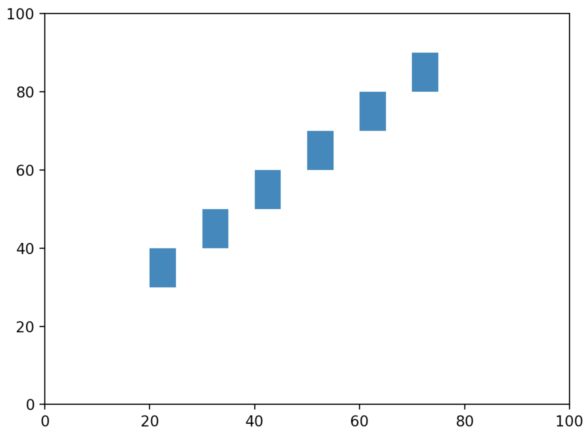

Assignment 0
Objectives and example
Assignments are designed to strengthen your problem-solving skills and build independence. While the module exercises are small variations of explained module examples, a single assignment will have multiple problems, all of which are intended to be more challenging than the module exercises, and will feature less detailed guidance. This is a good thing because ultimately, you’ll have to solve problems on your own. Facing and overcoming challenging problems cheerfully is the key to building problem-solving skill.
In each such assignment set, we will help develop your problem-solving skills by showing you how to solve one problem, the first and often hardest problem. However, the solution will include some exercises for you that you will need to submit.
Assignment problems
1. Demo problem
Suppose we want to use for-loops to produce this arrow-head like pattern:
*
**
***
****
*****
******
*******
********
*********
**********
**********
*********
********
*******
******
*****
****
***
**
*At this point, do not read further and try to address the following:
- First understand what is being asked.
- Do you see a for-loop or two at work where, as the loops are printing, you’ll get the output shown above?
- Can the problem be broken down into parts, where you can solve the parts and put the solution together afterwards?
- Try writing some code to get at least some of the output.
Don’t forget to submit your solutions to the exercises within.
2. In my_nested.py use nested loops in print the following pattern:
1 1
2 1
3 1
4 1
1 2
2 2
3 2
4 2
1 3
2 3
3 3
4 3
1 4
2 4
3 4
4 43. In my_nested2.py, write a program that uses nested for-loops to print the following pattern:
* * * * * * * * * * 10
* * * * * * * * * 9
* * * * * * * * 8
* * * * * * * 7
* * * * * * 6
* * * * * 5
* * * * 4
* * * 3
* * 2
* 1Notice the spaces between asterisks, the spaces leading up to the first asterisk in each line, and the number at the end.
4. In this exercise you will use a drawing tool and a for-loop to draw a series of rectangles. The goal is to draw this:

The code for drawing a single rectangle is:
from drawtool import DrawTool
dt = DrawTool()
dt.set_XY_range(0,100, 0,100)
dt.draw_rectangle(10, 20, 5, 10)
dt.display()This produces (we’ve added some markup to explain):
As a first step, download drawtool.py into your assignment1 folder and type up the above single-rectangle example in my_rectangle_example.py. This way, you know that the download worked and that drawing works. Now you can focus on the many-rectangle problem. Think about how the for-loop needs to range so that you can draw the rectangles in the loop. Write your program in my_rectangle_pattern.py.
5. The following program intends to print
hello
how're
you?This is the alleged program:
print('hello")
print('how're')
print('you?)There are several errors above. Point them out in your assignment pdf. Then fix them in fixed_hello.py.
6. The following program intends to print the following five times as in:
xyz
xyz
xyz
xyz
xyzThis is the alleged program:
Def print_one_line():
for i in range(1,5):
print(xyz)
print_one_lineThere are several errors above. Point them out in your assignment pdf. Then fix them in fixed_xyz.py.
7. The following program intends to print the numbers 5 through 0 as in:
5
4
3
2
1
0This is the alleged program:
def function#2()
for i in range(5,-1, 0):
print(i)
function#2()There are several errors above. Point them out in your assignment pdf. Then fix them in fixed_downprint.py.
How to submit:
- Make a zip of the directory and submit that.